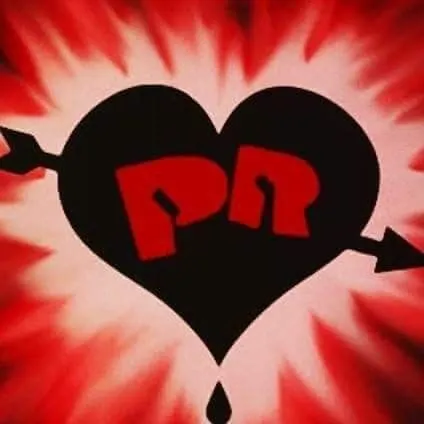

Musica En Argentina:
Tengo la oportunidad de disfrutar de la música argentina en distintos momentos. Es común escuchar rock nacional, folklore o trap en reuniones con amigos, fiestas y eventos de la ciudad.
También es interesante ver cómo cada persona tiene sus propios gustos musicales y cómo artistas como Los Redondos de Ricota, Los Piojos, Duki y Trueno siguen formando parte de nuestra cultura. Para mí, la música argentina es una manera de expresarnos, compartir gustos y conectar con otras personas.